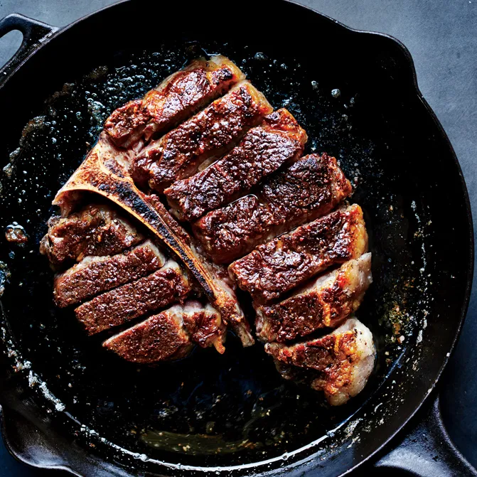

Perfect Porterhouse Steak

Ingredients
- 1 2”-thick Porterhouse steak, trimmed (about 2 lb.)
- 1 tablespoon vegetable oil
- Kosher salt and freshly ground black pepper
- 3 tablespoons unsalted butter, room temperature
Steps
- Step 1
Let steak sit at room temperature 30 minutes before cooking,
which will help it cook quickly and more evenly.
- Step 2
Heat broiler. Heat a large skillet, preferably cast iron, over medium-high heat, then heat oil in pan until smoking.
Season steak very generously with salt and pepper and cook until a deep brown crust forms on underside (do not turn),
about 4 minutes. Transfer steak to a cutting board, turning it browned side up.
- Step 3
Cut meat from bone in 2 pieces (strip steak and filet mignon).
Slice both pieces straight down perpendicular to the bone 1” thick.
Replace sliced steak around the bone (it should look like a whole sliced steak) and return to skillet, browned side up.
Top with butter and broil until butter is melted and steak is medium-rare, 4–6 minutes.
Serve steak with buttery pan juices spooned over.